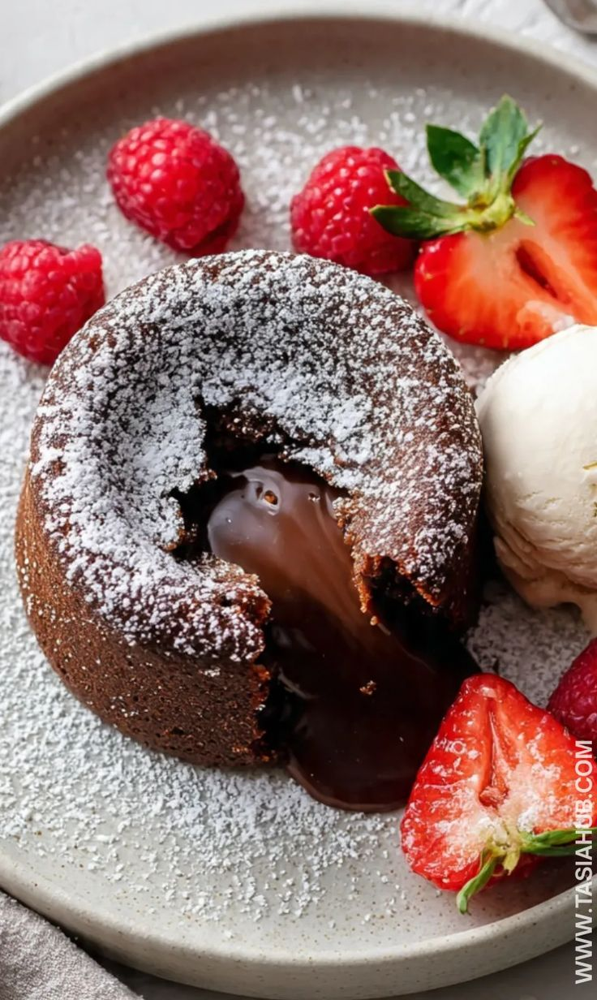

Lava Cake
Serve these decadent molten chocolate cakes topped with confectioners sugar or vanilla ice cream.

This famously disputed dessert gained popularity in the 1980s. Popularized in the 1980s due to an under-baking,
you'll find yourself melting over this oozing, decadent chocolate cake. Pair it with berries, preferably raspberries, or
your favorite vanilla bean or chocolate ice cream.
Prep Time:
10 minutes
Cook Time:
15 minutes
Total Time:
30 minutes
Servings:
4
Ingredients
- 6 1/2 (1-ounce) squares semisweet chocolate, finely chopped
- 1/2 Cup butter, cut into 8 pieces
- 3 Large Eggs
- 2 TBS All-Purpose Flour
- 4 tsp. Unsweetened Coca Powder
- 1 pinch Salt
Directions
- Preheat the oven to 400 degrees F (200 degrees C). Grease and flour four 6-ounce ramekins.
- Place chocolate and butter in the top of a double boiler over simmering water. Stir frequently, scraping down the sides with a rubber spatula to avoid scorching, until chocolate is melted, about 5 minutes.
- Combine eggs and sugar in a large bowl; beat with an electric mixer until pale and thick, about 5 minutes. Mix in melted chocolate, flour, cocoa powder, and a pinch of salt until combined. Pour batter into the prepared ramekins and place on a baking tray.
- BBake in the preheated oven until the sides are set but the middle is still jiggly, 10 to 13 minutes. Let cool for 5 minutes before serving.